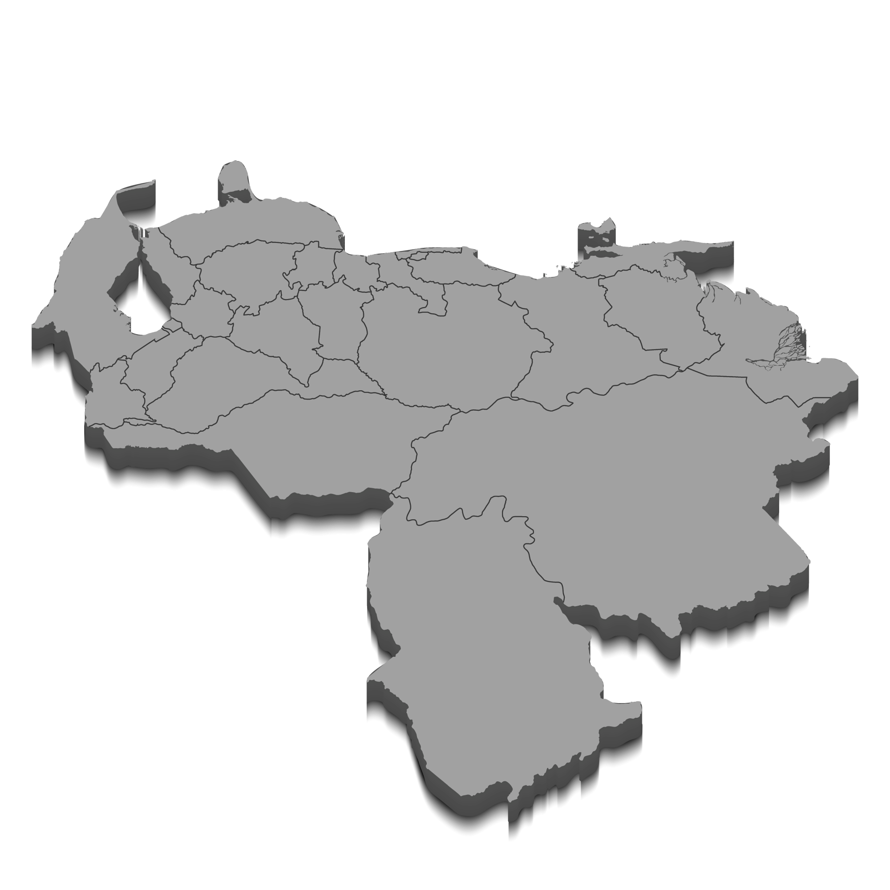

Evaluación Integral de Condominios e Inmuebles
Realizamos una Evaluación Integral de su inmueble para detectar Puntos de Mejora
Ver detalles

Servicios
Elevamos Tu Inmueble
Soluciones de mantenimiento de alta gama diseñadas para que cada pasillo y cada piso reflejen la elegancia y el cuidado que su comunidad merece.
Auditoría y Evaluación Técnica
Diagnóstico profesional de infraestructuras para detectar Puntos de Mejora y prevenir gastos imprevistos en su edificio.
ANTICIPAR SOLUCIONESLimpieza Estratégica
Sistema de higiene flexible que se adapta a su presupuesto semanal, garantizando áreas impecables incluso con retos de morosidad.
OPTIMIZAR MI HIGIENERestauración de Superficies
Especialistas en el pulido de alto nivel para mármol, granito y sistemas epóxicos, devolviendo el brillo original a sus espacios.
RECUPERAR EL BRILLOGestión Integral de Obras
Remodelaciones y mantenimiento preventivo ejecutado con estándares corporativos, asegurando resultados impecables.
TRANSFORMAR MI ESPACIONosotros
Experiencia que Transforma, Propósito que Inspira
En JM Multiservicios entendemos que su edificio es su activo más valioso. Mientras el mercado improvisa, nosotros rescatamos la ética del trabajo bien hecho. Nuestro equipo está integrado por adultos mayores y maestros de oficio: profesionales que poseen el detalle y la honestidad que su comunidad merece.
Ética Inquebrantable
Honestidad total en el uso de insumos y diagnósticos técnicos.
Mirada Experta
Supervisión directa de fundadores en cada proyecto ejecutado.
Soluciones Reales para la Realidad Nacional
Entendemos los desafíos de los condominios hoy: presupuestos ajustados y la necesidad de resultados que revaloricen su inversión.
Trato Directo
Negociación transparente directamente con los dueños, sin intermediarios.
Cero Interrupciones
Garantizamos la sustitución inmediata del personal para que su servicio nunca se detenga.
Garantía Amplia
Respaldamos cada obra y servicio con una garantía real sobre materiales y mano de obra.
Resolvemos sus Dudas Técnicas
La transparencia es nuestra base. Aquí respondemos las inquietudes más comunes de las Juntas de Condominio proactivas.
¿Cómo manejan la morosidad del edificio en su plan de trabajo?
Diseñamos planes de limpieza estratégica que se adaptan al flujo de caja semanal. Nuestra prioridad es mantener la higiene de las áreas críticas sin comprometer la estabilidad financiera del condominio.
¿Qué garantía ofrecen en los trabajos de restauración?
Ofrecemos garantía escrita sobre la mano de obra y los materiales utilizados. Al ser maestros de oficio, aseguramos que el brillo de su mármol o granito perdure con el mantenimiento adecuado.
¿El personal está bajo responsabilidad de JM Multiservicios?
Totalmente. Nosotros nos encargamos de toda la carga administrativa, legal y de supervisión. Si un trabajador falta, garantizamos su sustitución inmediata para no interrumpir el servicio.
¿Pueden realizar un diagnóstico sin compromiso?
Sí. Nuestra "Mirada Experta" comienza con una visita técnica gratuita donde evaluamos puntos críticos de su infraestructura y entregamos un informe de mejoras prioritarias.
¿Tiene una duda específica sobre su edificio?
Escríbala aquí y reciba una respuesta técnica en menos de 24 horas.
Nuestra Mirada Experta en toda la Región Capital
Brindamos soluciones de mantenimiento de alto nivel con un equipo desplegado estratégicamente para garantizar tiempos de respuesta inmediatos.
Distrito Capital
Casco Urbano de Caracas, Chacao, Baruta y principales zonas comerciales.
Altos Mirandinos
San Antonio de los Altos, Los Teques y Carrizal.
